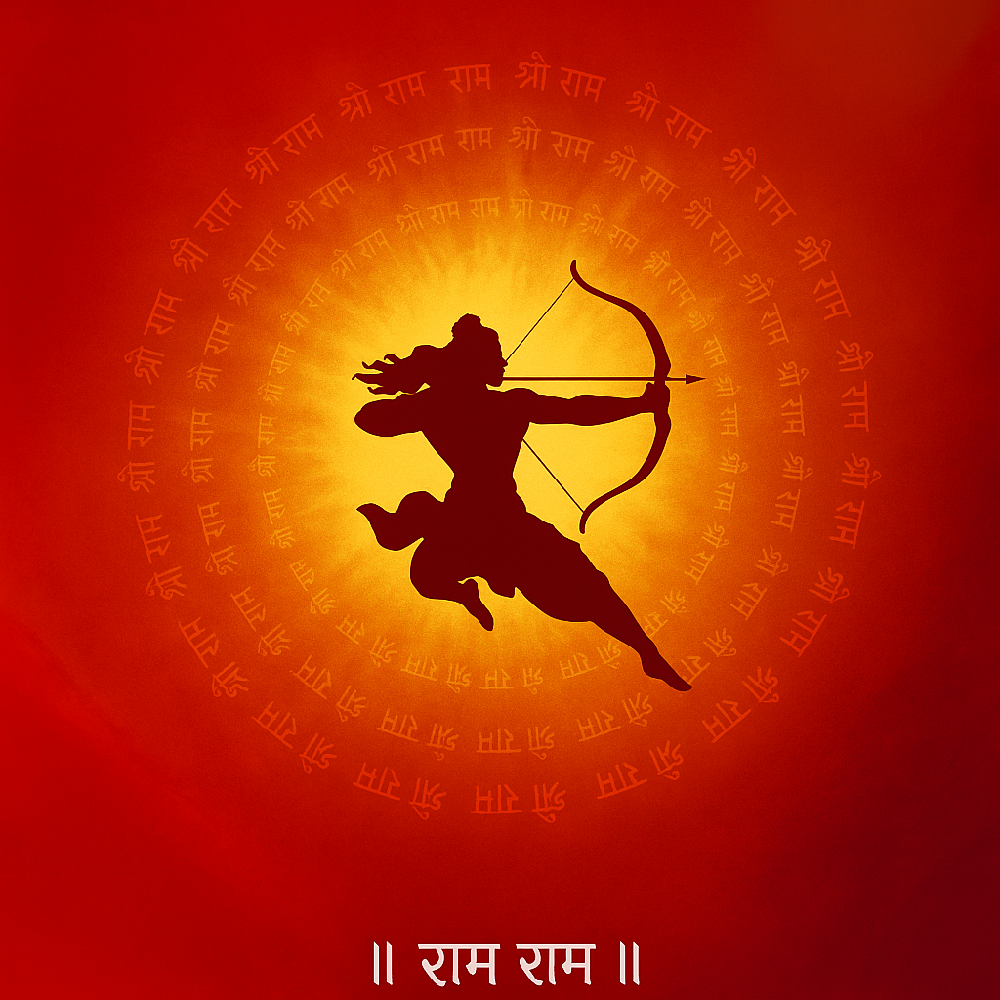

 Hindu App
Home
(current)
Ashtottara Satanamavali
Ganesha Stotras
Lakshmi Devi Stotras
Saraswati Devi Stotras
Durga / Devi Stotras
Shiva Stotras
Vishnu / Krishna Stotras
Narasimha Stotras
Subrahmanya Stotras
Hanuman Stotras
Surya Stotras
Other Stotras
Vratam
Vinayaka Chavithi
Varalakshmi Vratam
Sankatahara Chaturthi
Satyanarayana Vratam
Shani Trayodashi
Karthika Deepam
Mangala Gowri
Sravana Somavaram
Anantha Padmanabha
Ratha Saptami
Ekadasi
Ayyappa Swamy
Durga Ashtami / Navaratri
Nagula Chavithi
Chaitra Navaratri
Tulasi Vratam
Rama Navami
Vaikunta Ekadasi
Harathi
Sri Ganesha Harathi
Sri Lakshmi Devi Harathi
Sri Saraswati Devi Harathi
Sri Durga Devi Harathi
Sri Gowri Devi Harathi
Sri Parameshwara Harathi
Sri Subrahmanya Swamy Harathi
Sri Hanuman Harathi
Sri Satyanarayana Harathi
Sri Venkateswara Harathi
Sri Krishna Harathi
Sri Rama Harathi
Sri Sai Baba Harathi
Sri Anjaneya Harathi
Navaratri Devi Harathis
Sri Sitarama Kalyana Harathi
Sri Varalakshmi Harathi
Sri Naga Devata Harathi
Sri Srirama Navami Harathi
Sri Adi Shankaracharya Harathi
Welcome to Hindu Devotional App
This is a simple Hindu Devotional App created using HTML, CSS, and JavaScript.